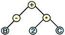

Contents:
Introduction
Templates
Representing Parse Trees
Looking Ahead
Introduction
Object-oriented languages like C++ make development easier, but performance tuning harder. The same abstractions that allow programmers to express their ideas compactly also make it hard for compilers to re-order operations, predict how many times a loop will be executed, or re-use memory instead of copying values.
For example, suppose that a program uses a Vector class to represent vectors of floating-point values:
class Vector
{
public :
Vector(); // default constructor
Vector( // value constructor
int size, // ..size of vector
float val // ..initial element value
);
Vector( // copy constructor
const Vector & v // ..what to copy
);
virtual ~Vector(); // clean up
float getAt( // get an element
int index // ..which element to get
) const;
void setAt( // change an element
int index, // ..which element to set
float val // ..new value for element
);
Vector operator+( // add, creating a new vector
const Vector & right // ..thing being added
);
Vector operator*( // multiply (create result)
const Vector & right // ..thing being multiplied
);
Vector & operator=( // assign, returning target
const Vector & right // ..source
);
protected :
int len_; // current length
float * val_; // current values
};
Consider what happens when the following statement is executed:
Vector x, a, b, c; // variable initialization omitted x = a + b * c;
b*c creates a new Vector, and fills it with the elementwise product of b and c by looping over the values that those two vectors encapsulate. The call to the addition operator creates another temporary, and executes another loop to fill it. Finally, the call to the assignment operator doesn't create a third temporary, but it does execute a third loop. Thus, this simple statement is equivalent to:
Vector x, a, b, c;
// ...initialization...
Vector temp_1;
for (int i=0; i<vectorLength; ++i)
{
temp_1.setAt(i, b.getAt(i) * c.getAt(i));
}
Vector temp_2;
for (int i=0; i<vectorLength; ++i)
{
temp_2.setAt(i, a.getAt(i) + temp_1.getAt(i));
}
for (int i=0; i<vectorLength; ++i)
{
x.setAt(i, temp_2.getAt(i));
}
Clearly, if this program was written in C instead of C++, the three loops would have been combined, and the two temporary vectors eliminated:
Vector x, a, b, c;
// ...initialization...
for (int i=0; i<vectorLength; ++i)
{
x.setAt(i, a.getAt(i) + b.getAt(i) * c.getAt(i));
}
The optimizations required to turn the three-loop version of this code into its single-loop equivalent are beyond the capabilities of existing commercial compilers. Because operations may involve aliasing---i.e., because an expression like x=a+b*c can assign to a vector while also reading from it---optimizers must err on the side of caution, and neither eliminate temporaries nor fuse loops. This has led many programmers to believe that C++ is intrinsically less efficient than C or Fortran 77.
Luckily, this conclusion is wrong. By using templates in a highly-structured way, PETE exposes opportunities for optimization to compilers without sacrificing readability or portability. The result is that modern C++ compilers can deliver the same performance for PETE-based programs as C or Fortran compilers do for equivalent programs written in those lower-level languages.
In order to understand how and why PETE does what it does, it is
necessary to understand what C++ templates
are, and how PETE (and similar libraries) use templates to encode parse trees.
Templates
Templates were a late addition to C++, but they have increased the power of the language significantly. One way to look at templates is as an improvement over macros. Suppose that you wanted to create a set of classes to store pairs of ints, pairs of floats, and so on. Without templates, you might define a macro:
#define DECLARE_PAIR_CLASS(name_, type_) \
class name_ \
{ \
public : \
name_(); // default constructor \
name_(type_ left, type_ right); // value constructor \
name_(const name_ & right); // copy constructor \
virtual ~name_(); // destructor \
type_ & left(); // access left element \
type_ & right(); // access right element \
\
protected : \
type_ left_, right_; // value storage \
};
then use it to create each class in turn:
DECLARE_PAIR_CLASS(IntPair, int) DECLARE_PAIR_CLASS(FloatPair, float)
A better way to do this is to declare a template class:
template<class DataType>
class Pair
{
public :
Pair(); // default constructor
Pair(DataType left, // value constructor
DataType right);
Pair(const Pair<DataType> & right); // copy constructor
virtual ~Pair(); // destructor
DataType & left(); // access left element
DataType & right(); // access right element
protected :
DataType left_, right_; // value storage
};
The keyword template tells the compiler that the class cannot be compiled right away, since it depends on an as-yet-unknown data type. When the declarations:
Pair<int> pairOfInts; Pair<float> pairOfFloats;
are seen, the compiler instantiates Pair<> once for each underlying data type. This happens automatically: the programmer does not have to create the actual pair classes explicitly by saying:
typedef Pair<int> IntPair; // incorrect! IntPair pairOfInts;
Templates can also be used to define generic functions, as in:
template<class DataType>
void swap(DataType & left, DataType & right)
{
DataType tmp(left);
left = right;
right = tmp;
}
Once again, this function can be called with two objects of any matching type, without any further work on the programmer's part:
int i, j; swap(i, j); Shape back, front; swap(back, front);
Note that the implementation of swap() depends on the actual data type of its arguments having both a copy constructor (so that tmp can be initialized with the value of left) and an assignment operator (so that left and right can be overwritten). If the actual data type does not provide either of these, the compiler will report an error.
Note also that swap() can be made more flexible by not requiring the two objects to have exactly the same type. The following re-definition of swap() will exchange the values of any two objects, provided appropriate assignment and conversion operators exist:
template<class LeftType, class RightType>
void swap(LeftType & left, RightType & right)
{
LeftType tmp(left);
left = right;
right = tmp;
}
Finally, the word class appears in template definitions because other values, such as integers, can also be used. The code below defines a small fixed-size vector class, but does not fix either its size or underlying data type:
template<class DataType, int FixedSize>
class FixedVector
{
public :
FixedVector(); // default constructor
FixedVector(DataType filler); // value constructor
virtual ~FixedVector(); // destructor
FixedVector( // copy constructor
FixedVector<DataType, FixedSize> right
);
FixedVector<DataType> // assignment
operator=(
const FixedVector<DataType, FixedSize> & right
);
DataType & operator[](int index); // element access
protected :
DataType storage[FixedSize]; // fixed-size storage
};
It is at this point that the possible performance advantages of templated classes start to become apparent. Suppose that the copy constructor for this class is implemented as follows:
template<class DataType, int FixedSize>
FixedVector::FixedVector(
FixedVector<DataType, FixedSize> right
){
for (int i=0; i<FixedSize; ++i)
{
storage[i] = right.storage[i];
}
}
When the compiler sees a use of the copy constructor, such as:
FixedVector<DataType, FixedSize> first; // initialization of first vector omitted FixedVector<DataType, FixedSize> second(first);
it knows the size as well as the underlying data type of the objects being manipulated, and can therefore do more optimization than it could if the size was variable.
Automatic instantiation of templates is convenient and powerful, but does have one drawback. Suppose the Pair<> class shown earlier is instantiated in one source file to create a pair of ints, and in another source file to create a pair of Shapes. The compiler and linker could:
The first of these can lead to very large programs, as a commonly-used template class may be expanded dozens of times. The second is difficult to do, as it involves patching up compiled files as they are being linked. Most recent versions of C++ compilers are therefore taking the third approach, but POOMA II users should be aware that older versions might still produce much larger executables than one would expect.
The last use of templates that is important to this discussion is template methods. Just as templated functions are instantiated for different types of arguments, so too are templated methods instantiated for a class when and as they are used. Suppose a class called Example is defined as follows:
class Example
{
public :
Example(); // default constructor
virtual ~Example(); // destructor
template<class T>
void foo(T object)
{
// some operation on object
}
};
Whenever the method Example::foo() is called with an object of a particular type, the compiler instantiates it for that type. Thus, both of the following calls are legal:
Example e; Shape box; e.foo(5); // instantiate for int e.foo(box); // instantiate for Shape
Parse trees are commonly used by compilers to store the essential features of the source of a program. The leaf nodes of a parse tree consist of atomic symbols in the language, such as variable names or numerical constants. The parse tree's intermediate nodes represent ways of combining those values, such as arithmetic operators and while loops. For example, the expression -B + 2 * C could be represented by the parse tree shown in Figure 1
|  |
| Figure 1: A Simple Parse Tree |
Parse trees are often represented textually using prefix notation, in which the non-terminal combiner and its arguments are strung together in a parenthesized list. For example, the expression -B + 2 * C can be represented as (+ (- B) (* 2 C)).
What makes all of this relevant to high-performance computing is that the expression (+ (- B) (* 2 C)) could equally easily be written BinaryOp<Add, UnaryOp<Minus, B>, BinaryOp<Multiply, Scalar<2>, C>>: it's just a different notation. However, this notation is very similar to the syntax of C++ templates --- so similar, in fact, that it can actually be implemented given a careful enough set of template definitions. As discussed earlier, by providing more information to the optimizer as programs are being compiled, template libraries can increase the scope for performance optimization.
Any facility for representing expressions as trees must provide:
C++ templates were not designed with these requirements in mind, but it turns out that they can satisfy them. The central idea is to use the compiler's representation of type information in an instantiated template to store operands and operators. For example, suppose that a set of classes have been defined to represent the basic arithmetic operations:
struct AddOp
{
static inline double apply(const double & left, const double & y)
{
return x + y;
}
};
struct MulOp
{
static inline double apply(const double & left, const double & y)
{
return x * y;
}
};
// ...and so on...
Note the use of the keyword struct; this simply signals that everything else in these classes---in particular, their default constructors and their destructors---are public.
Now suppose that a templated class BinaryOp<> has been defined as follows:
template<class Operator, class RHS>
class BinaryOp
{
public :
// empty constructor will be optimized away, but triggers
// type identification needed for template expansion
BinaryOp(
Operator op,
const Vector & leftArg,
const RHS & rightArg
) : left_(leftArg),
right_(rightArg)
{}
// empty destructor will be optimized away
~BinaryOp()
{}
// calculate value of expression at specified index by recursing
inline double apply(int i)
{
return Operator::apply(leftArg.apply(i), rightArg.apply(i));
}
protected :
const Vector & left_;
const RHS & right_;
};
If b and c have been defined as Vector, and if Vector::apply() returns the vector element at the specified index, then when the compiler sees the following expression:
BinaryOp<MulOp, Vector, Vector>(MulOp(), b, c).apply(3)
it translates the expression into b.apply(3) * c.apply(3). The creation of the intermediate instance of BinaryOp<> is optimized away completely, since all that object does is record a couple of references to arguments.
Why to go all this trouble? The answer is rather long, and requires a few seemingly-pointless steps. Consider what happens when the complicated expression above is nested inside an even more complicated expression, which adds an element of another vector a to the original expression's result:
BinaryOp< AddOp,
Vector,
BinaryOp< MulOp, Vector, Vector >
>(a, BinaryOp< MulOp, Vector, Vector >(b, c)).apply(3);
This expression calculates a.apply(3) + (b.apply(3) *c.apply(3)). If the expression was wrapped in a for loop, and the loop's index was used in place of the constant 3, the expression would calculate an entire vector's worth of new values:
BinaryOp< AddOp,
Vector,
BinaryOp< MulOp, Vector, Vector > >
expr(a, BinaryOp< MulOp, Vector, Vector >(b, c));
for (int i=0; i<vectorLength; ++i)
{
double tmp = expr.apply(i);
}
The possible nesting of BinaryOp<> inside itself is the reason that the BinaryOp<> template has two type parameters. The first argument to a BinaryOp<> is always a Vector, but the second may be either a Vector or an expression involving Vectors.
The code above is not something any reasonable person would want to write. However, having a compiler create this loop and its contained expression automatically is entirely plausible. The first step is to overload addition and multiplication for vectors, so that operator+(Vector,Vector) (and operator*(Vector,Vector)) instantiates BinaryOp<> with AddOp (and MulOp) as its first type argument, and invokes the apply() method of the instantiated object. The second step is to overload the assignment operator operator=(Vector,Vector) so that it generates the loop shown above:
template<class Op, T>
Vector & operator=(
Vector & target,
BinaryOp<Op> & expr
){
for (int i=0; i<vectorLength; ++i)
{
target.set(i, expr.apply(i));
}
return target;
}
With these operator definitions in play, the simple expression:
Vector x, a, b, c; // ...initialization... x = a + b * c;
is automatically translated into the efficient loop shown above,
rather than into the inefficient
loops shown earlier. The expression on the right hand side is
turned into an instance of a templated class whose type encodes the
operations to be performed, while the implementation of the assignment
operator causes that expression to be evaluated exactly once for each
legal index. No temporaries are created, and only a single loop is
executed.
Looking Ahead
Of course, an industrial-strength implementation of these ideas requires definitions that are considerably more complicated than the ones shown in the previous section. For a start, BinaryOp<> and its kin are not defined directly on any one class Vector. It isn't even defined for Vector<T>, but rather for a wrapper class UNDONE. This class expects nothing from its contained class except an apply method capable of turning an index into a value. This allows users to integrate their own classes with PETE simply by providing the required method. Similarly, the classes that PETE defines to represent unary and binary operators are considerably more flexible than the ones shown above.
One of the idioms used by PETE that hasn't been shown above is the tag class. A tag class has no methods, and contains no data; its only reason for existing is as a flag to the C++ compiler during template expansion. A mutually exclusive set of tag classes is therefore the compile-time equivalent of an enumeration. PETE uses tag classes to identify operators, the way in which operands are referenced (i.e. directly or through iterators and other intermediators), and so on.
Another idiom used in PETE is the traits class, which depends on a feature of ANSI C++ called partial specialization. When a C++ compiler instantiates a template, it tries to choose the best possible match for the arguments it is given. For example, suppose that both of the following definitions are in scope when the objects fred and jane are created:
template<class T>
class Example
{
enum { tag = 123; }
};
template<>
class Example<int>
{
enum { tag = 456; }
};
Example<int> fred;
Example<float> jane;
As you would expect, fred's tag has the value 456, while jane's has the generic value 123: the compiler chooses the most specific type possible.
This facility can be used to create lookup tables. For example, suppose we want to encode the types of the results of arithmetic operations involving an arbitrary mix of int and double arguments. The following definitions do the trick:
// generic case
template<class Left, class Right>
class TypeEncoding
{
// empty: no generic result possible
};
// int op int => int
template<>
class TypeEncoding<int, int>
{
typedef int Result_t;
};
// int op double => double
template<>
class TypeEncoding<int, double>
{
typedef double Result_t;
};
// double op int => double
template<>
class TypeEncoding<double, int>
{
typedef double Result_t;
};
// double op double => double
template<>
class TypeEncoding<double, double>
{
typedef double Result_t;
};
We can now overcome one of the biggest shortcomings of C++ templates, and automatically generate the correct result type of a templated expression:
template<class Left, class Right>
TypeEncoding<Left, Right>::Result_t
add(const Left & left, const Right & right)
{
return left + right;
}
If add() is called with two int arguments, the compiler will know that that particular instantiation is going to return an int. If it is called with one or two double arguments, the compiler will know it is going to return a double. By specializing TypeEncoding<> for other mixes of types, a library like PETE can tell the compiler the result type of any expression over any mix of types. In particular, if a new class such as Complex, Quaternion, or Color is added, the compiler can be told what the result of (for example) multiplying a Color by a float is, without anything else in the library having to be changed.
TypeEncoding<> is an example of a traits class. Each specialization of the class defines a typedef with a particular name (in this case, Result_t). The class designer could also specify that TypeEncoding<>'s specializations had to define such things as constant strings:
// int op double => double
template<>
class TypeEncoding<int, double>
{
typedef double Result_t;
static const char * const Signature = "{int,double}=>double";
};
// other classes contain similar definitions
to help programs print debugging information:
template<class Left, class Right>
TypeEncoding<Left, Right>::Result_t
add(const Left & left, const Right & right)
{
cout << TypeEncoding<Left, Right>::Signature << endl;
return left + right;
}
In general, if the classes in the set associated with a trait all adhere to some conventions regarding name definitions, then traits classes can be used to implement compile-time polymorphism. Another way to think of this is that each class in a set of traits classes provides different set of answers to a pre-defined set of questions.
Since writing a dozen or more specializations of classes like
TypeEncoding<> and BinaryOp<> by hand
would be tedious, time-consuming, and error-prone, PETE provides some
simple command-line tools that can generate the required C++ code
automatically. The first tutorial shows how
to use these tools to integrate a simple 3-element vector class into
PETE. Subsequent tutorials show the steps required to integrate more
complex classes, such as the vectors and lists of the Standard Template Library (STL), and how to
provide additional operators and combiners.
| [Prev] | [Home] | [Next] |